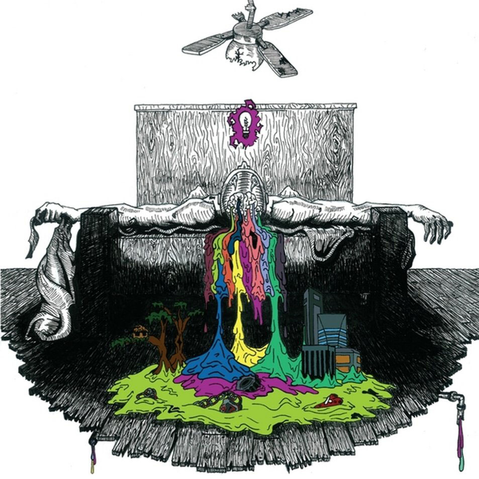
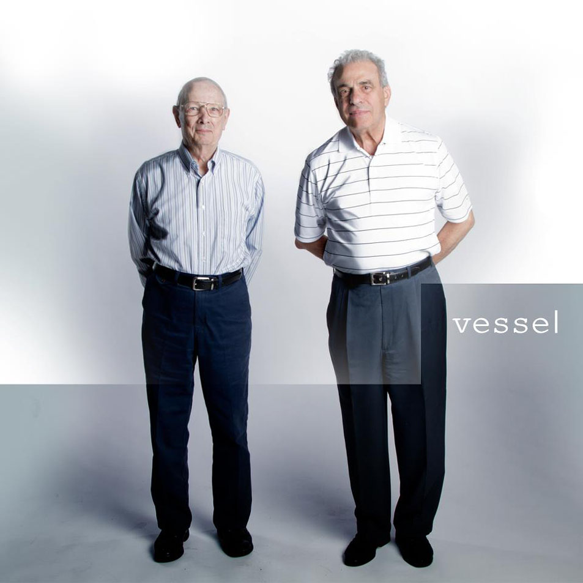
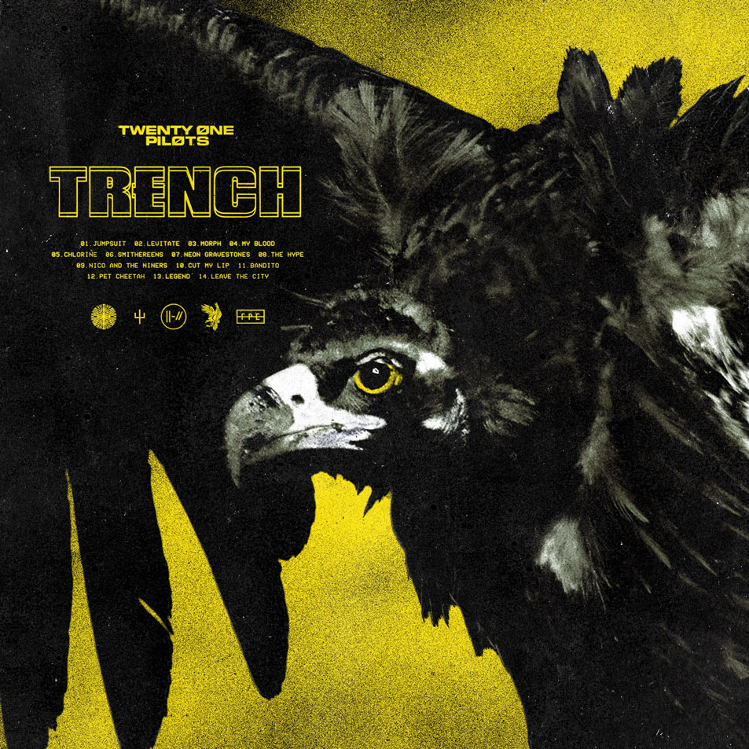

Biografía
Twenty One Pilots (estilizado twenty øne piløts, y abreviado TØP) es un dúo musical estadounidense originario de Columbus, Ohio. La banda fue formada en 2009 por el vocalista Tyler Joseph junto a los ex miembros Nick Thomas y Chris Salih, quienes se retiraron en 2011. Estos alcanzaron la fama a mediados de 2010 después de haber hecho lanzamientos independientes y tours durante varios años. Actualmente la banda está conformada por el cantante, compositor y multinstrumentista Tyler Joseph, junto con el baterista Josh Dun.
Publicaron dos álbumes por su cuenta, Twenty One Pilots (2009) y Regional at Best (2011), antes de firmar con la discográfica Fueled by Ramen. Su álbum debut bajo la compañía mencionada, Vessel, fue lanzado en 2013. Alcanzaron un mayor éxito comercial y popular con su cuarto álbum de estudio, titulado Blurryface (2015), que incluye los sencillos «Stressed Out» y «Ride», los cuales alcanzaron las posiciones 2 y 5 respectivamente en el Billboard Hot 100. Su álbum más reciente, Trench, fue publicado el 5 de octubre de 2018.
Adicionalmente, el sencillo «Heathens», grabado como parte de la banda sonora de la película Suicide Squad, convirtió al dúo en ser el primer artista alternativo en tener dos sencillos entre los diez mejores en Estados Unidos de manera simultánea. El grupo también ha ganado un premio Grammy en la categoría Mejor Dúo/Rock alternativo en el año 2017.
En el año 2019, la canción Truce fue certificada con oro, conviertiendo a Twenty One Pilots en el único grupo en la historia en obtener dos álbumes consecutivos con todas sus canciones certificadas con oro o platino (Blurryface y posteriormente Vessel).

La banda fue formada en 2009 en Columbus, Ohio, por un par de amigos universitarios Tyler Joseph (Columbus, Ohio; 1 de diciembre de 1988), Nick Thomas (Columbus, Ohio; 18 de junio de 1988) y Chris Salih. A Tyler se le ocurrió el nombre de la banda mientras estudiaba el libro All My Sons de Arthur Miller, una obra sobre un padre de familia que vendía piezas para aviones durante la Segunda Guerra Mundial, un día le llegan piezas defectuosas y decide venderlas, causando la muerte de veintiún pilotos. Tyler Joseph explica que el dilema moral de la historia fue la inspiración para el nombre de la banda. El 29 de diciembre de 2009, lanzaron su álbum debut-independiente, titulado "Twenty One Pilots" y comenzaron una pequeña gira en Ohio.
En 2010, la banda lanzó dos canciones inéditas oficialmente a su cuenta en SoundCloud. La primera, una canción original, titulada "Time to Say Goodbye", y una versión de «Jar of Hearts» de Christina Perri.
A mediados del 2011, Thomas y Salih abandonaron la banda, entonces Tyler se unió con Josh Dun. Ambos publicaron su despedida en la página oficial de Facebook de la banda.
Estilo musical
El estilo musical de la banda ha sido descrito como hip hop alternativo, electropop, indie pop, pop rock, rap, reggae, trip hop, e indie rock. También han sido ocasionalmente clasificados como "indie rock",pop, electronica, indie rock, pop-rap, hip hop, indietronica, y en el caso de Blurryface, reggae.
Es difícil categorizar a la banda usando solamente un género, ya que encajan dentro de varios. Se ha atribuido esto parcialmente al hecho de que, tanto Joseph como Dun, son músicos autodidactas, lo que implica que mientras producen su trabajo rompen muchas convenciones musicales de las que no son conscientes, incluyendo estar confinado a un único género.

Instrumentalmente, Twenty One Pilots tiene una mezcla de piano (algunas veces un teclado eléctrico o una keytar), sintetizadores, batería (también mezclada con batería eléctrica en algunas partes), voz y ocasionalmente ukelele, trompetas, pandero o bajo. Líricamente, sus canciones son escritas por Joseph, quién incorpora tanto rap como canto en sus letras. El periodista de música Carl Wilson ha notado que el rap de Joseph es comparado a menudo con el de Macklemore, pero escribió: «entre los raperos blancos después de Eminem, encuentro a Joseph más penetrante, sardónico y expresivo». Joseph ha dicho que nunca pretendía ser rapero, pero que al intentar encajar poesía, sobre todo cuando es demasiado larga, necesita empezar a rapear para hacer encajar las letras.
